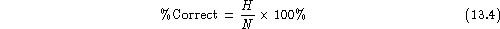
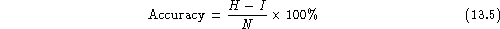
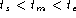
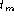

HRESULTS is the HTK performance analysis tool. It reads in a set of label files (typically output from a recognition tool such as HVITE) and compares them with the corresponding reference transcription files. For the analysis of speech recognition output, the comparison is based on a Dynamic Programming-based string alignment procedure. For the analysis of word-spotting output, the comparison uses the standard US NIST FOM metric.
When used to calculate the sentence accuracy using DP the basic output is recognition statistics for the whole file set in the format
--------------------------- Overall Results ------------------- SENT: %Correct=13.00 [H=13, S=87, N=100] WORD: %Corr=53.36, Acc=44.90 [H=460,D=49,S=353,I=73,N=862] ===============================================================The first line gives the sentence-level accuracy based on the total number of label files which are identical to the transcription files. The second line is the word accuracy based on the DP matches between the label files and the transcriptions
 .
In this second line,
H is the number of correct labels, D is the number of deletions,
S is the number of substitutions, I is the number of insertions and
N is the total number of labels in the defining transcription files.
The percentage number of labels correctly recognised is given by
.
In this second line,
H is the number of correct labels, D is the number of deletions,
S is the number of substitutions, I is the number of insertions and
N is the total number of labels in the defining transcription files.
The percentage number of labels correctly recognised is given by

and the accuracy is computed by

In addition to the standard HTK output format, HRESULTS provides an alternative similar to that used in the US NIST scoring package, i.e.
|=============================================================|
| # Snt | Corr Sub Del Ins Err S. Err |
|-------------------------------------------------------------|
| Sum/Avg | 87 | 53.36 40.95 5.68 8.47 55.10 87.00 |
`-------------------------------------------------------------'
Optional extra outputs available from HRESULTS are
-e ??? X would be used.
Label files containing triphone labels of the form A-B+C can be
optionally stripped down to just the class name B via the -s
switch.
The word spotting mode of scoring can be used to calculate hits, false alarms and the associated figure of merit for each of a set of keywords. Optionally it can also calculate ROC information over a range of false alarm rates. A typical output is as follows
------------------------ Figures of Merit -------------------------
KeyWord: #Hits #FAs #Actual FOM
A: 8 1 14 30.54
B: 4 2 14 15.27
Overall: 12 3 28 22.91
-------------------------------------------------------------------
which shows the number of hits and false alarms (FA) for two keywords
A and B. A label in the test file with start time
and end time constitutes a hit if there is a corresponding label
in the reference file such that  where  is the
mid-point of the reference label.
Note that for keyword scoring, the test transcriptions must include a score with each labelled word spot and all transcriptions must include boundary time information.
The FOM gives the % of hits averaged over the range 1 to 10 FA's per hour. This is calculated by first ordering all spots for a particular keyword according to the match score. Then for each FA rate f, the number of hits are counted starting from the top of the ordered list and stopping when f have been encountered. This corresponds to a posteriori setting of the keyword detection threshold and effectively gives an upper bound on keyword spotting performance.